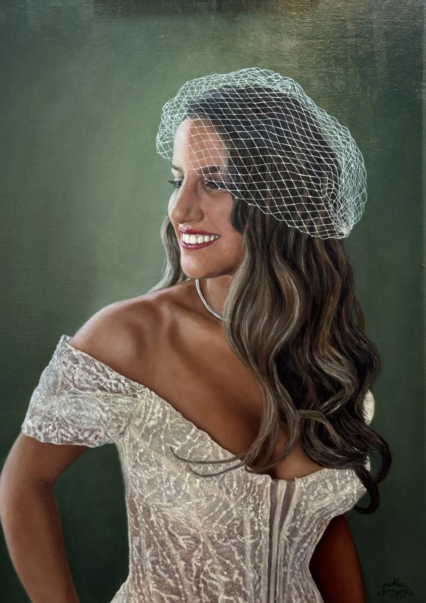
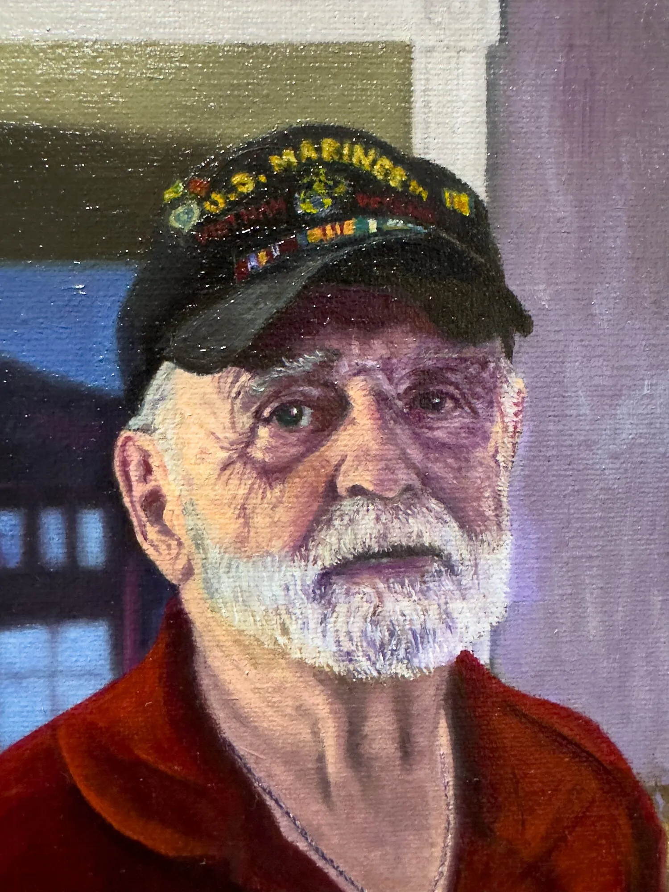
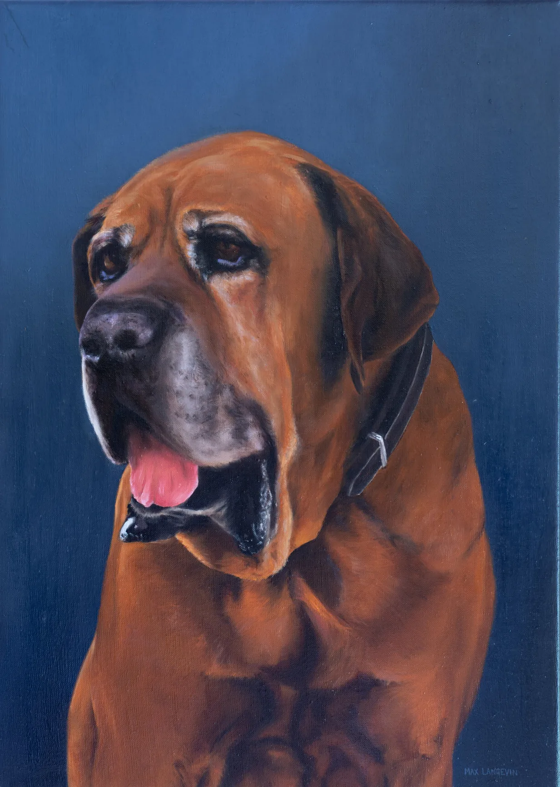
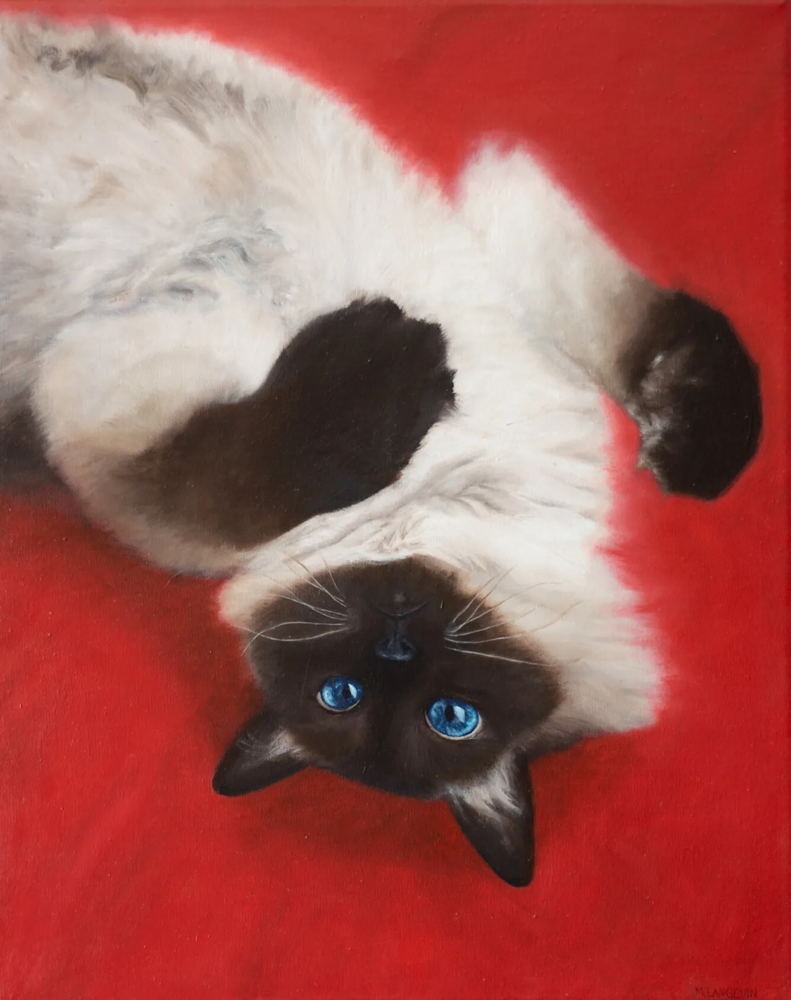

Pintor realista · Santiago de Chile
Maximiliano Langevin
Un cuadro es un objeto: lino tensado, madera y capas de óleo. Baja y gíralo.
Lino tensado sobre madera.
Karin Goldberg · 48 × 68 cm · 2,5 cm de canto
El reverso: lino crudo, bastidor y la firma.
Por detrás también se lee un cuadro.
Y por delante, una persona.

Luz rasante
La materia aparece con la luz baja.
Cuando la luz pasa casi paralela a la tela, cada pincelada proyecta su pequeña sombra. Así revisan los restauradores la superficie de un óleo.
Con luz de frente, vuelve a ser imagen.
Veteran George · 2024 · 28 × 40 cm
Relieve simulado a partir de la fotografía de la obra.

Pintura, dibujo y grabado · 2017 — 2025
Dieciséis obras en círculo.

Del lino al óleo
Todo empieza en un lino crudo.
Primero, el dibujo.
Las líneas que ordenan el cuadro antes del color.
Después el color, capa por capa.
Rojo de fondo, blancos fríos y un solo acento: los ojos azules.
Coti
2020 · Óleo sobre tela · 50 × 40 cm
Archivo completo
Todas las obras.

Santiago, Chile · 1996
Biografía
Maximiliano Langevin Larraín
Encargar
Un retrato, del lino a la firma.
Contacto